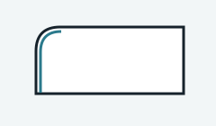
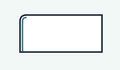

Loading measured results…
Context
Why a visual layer at all
The measured comparison is loading.
Outcome


Measured study visual regression
Loading measured results…
The measured comparison is loading.

